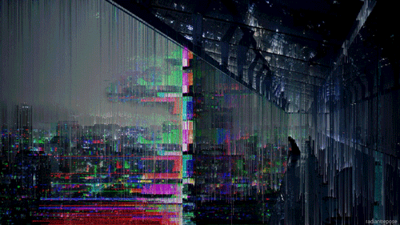
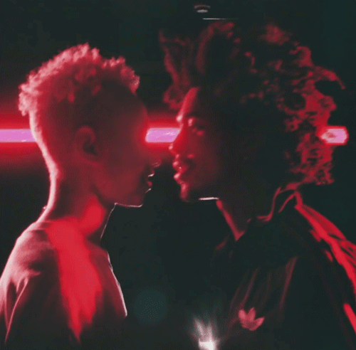

Art
Personal art: photography, glitch art, and more. Select any image to see it larger.
Photography
Glitch art
Some pieces carry my handle, radiantrepose. The animated pieces can be paused.


Personal art: photography, glitch art, and more. Select any image to see it larger.
Some pieces carry my handle, radiantrepose. The animated pieces can be paused.

